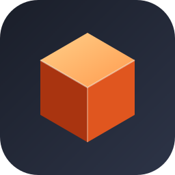
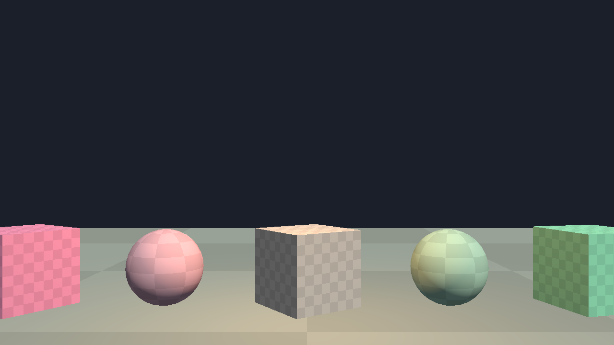
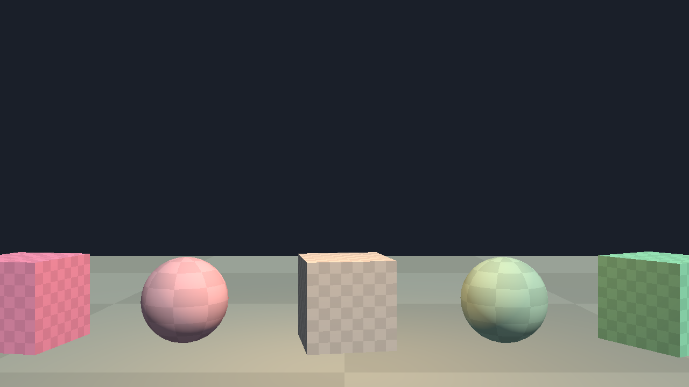

Spinner).Кадры отрисованы самим рендерером без захвата экрана: sbox-app --screenshot out.png. Ассеты игры в репозиторий не входят.
| Крейт | Назначение | Статус |
|---|---|---|
sbox-math | Vec/Quat, Angles, Transform, BBox, Ray, Plane в соглашениях s&box (X вперёд, Y влево, Z вверх) | готово |
sbox-scene | Scene / GameObject / Component, жизненный цикл, иерархия, отложенное удаление, fixed update | готово |
sbox-resource | Контейнер *_c, бинарный KV3, текстуры vtex_c (BC1–7, LZ4/ZSTD), VBIB (meshopt), меши vmdl_c | проверено на 6878 файлах |
sbox-render | wgpu: меши, направленный и точечные источники, глубина, off-screen рендер | базовый |
Материалы vmat_c, шейдеры | Текстуры в рендерере, PBR, тени | не начато |
| Скелеты и анимации | anim_c, скиннинг | не начато |
| Физика, звук, ввод, сеть, UI | rapier, vsnd_c, Input, Networking, Razor | не начато |
| Скриптинг | Игровой код s&box написан на C# — нужно решение: Rust-API или встроенный .NET | не решено |
Проверка форматов на реальных файлах: контейнер 6878/6878, KV3 6999/7014 блоков, текстуры 2618/2618 (размеры мипов совпадают до байта), модели 743/744.
Важно: это не полный порт и не замена движка. Исходный s&box — около миллиона строк C# поверх закрытого ядра Source 2; здесь воспроизводятся форматы и базовый рантайм.
git clone https://github.com/LakoMoor/sbox-rs
cd sbox-rs
cargo run -p sbox-app --releaseЧтобы открыть реальную модель, нужны файлы игры. Склонируйте sbox-public, выполните там Setup.bat (скачает бинарники и ресурсы) и укажите путь:
cargo run -p sbox-app --release -- path/to/game/core/models/arrow.vmdl_c